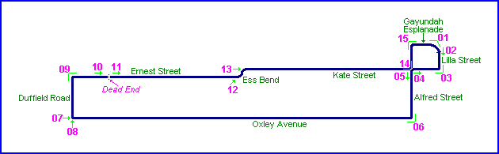
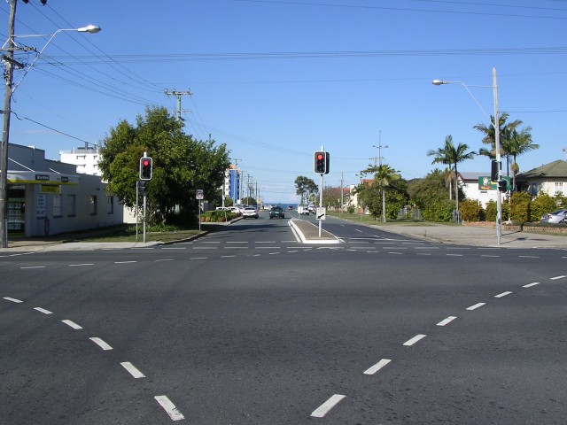
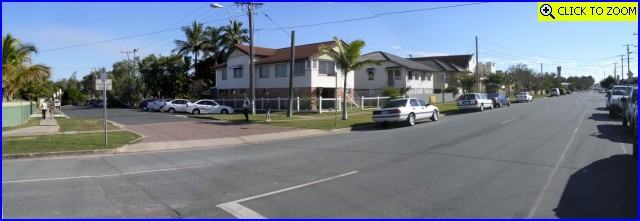
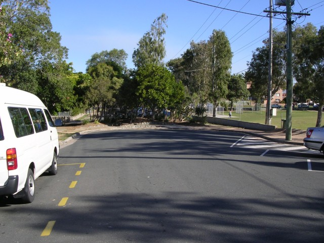
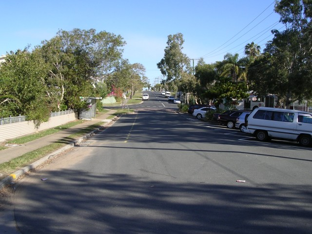
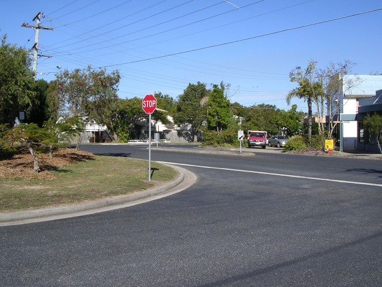
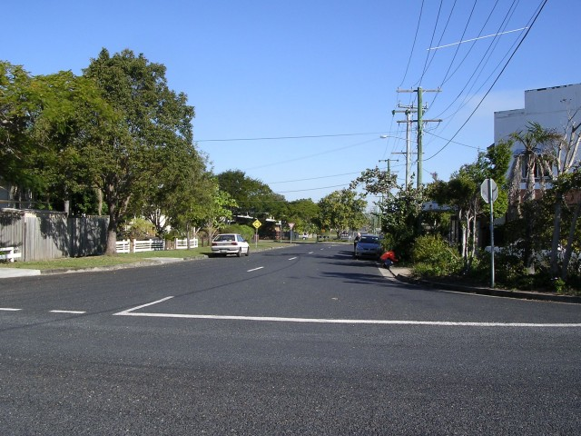
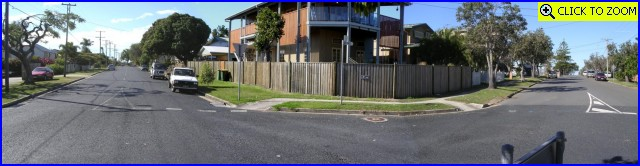
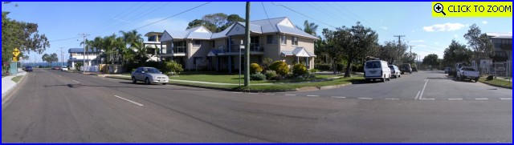

Woody Point - Duffield Road to Gayundah Esplanade, via Ernest, Kate & Alfred Streets
|| Contents || Lilla-Kate-Alfred-Oxley | Duffield-Ernest-Kate-Alfred-Gayundah || Home ||

Numbers and arrows on the map represent the location where the photographs were
taken. Scroll down to view the photographs.
Return to racingcircuits.net's Photo Archive Main Index

08 - Start of Duffield Road at the end of the Oxley Avenue straight

09 - Duffield Road (right >) into and
Ernest Street (< left). [Click here to zoom in]

10 - Ernest Street. A dead-end has been built here outside of the school.

11 - Other side of the dead end going south on Ernest Street.

12 - Entry to the Esses at Ernest-Arthur-Kate Streets. Photo taken from
Ernest Street.

13 - Looking into Kate Street from Arthur Street at the exit of the Esses.

14 - Kate Street (< left) into Alfred
Street (right >). Return to finish. [Click here to zoom in]

15 - Alfred Street (right >) to Gayundah
Esplanade (< left). [Click here to zoom in]
Photographs and Text ©Neil Fackerell. Reproduced here with kind permission.
{kind=link}
{kind=link}
{kind=link}